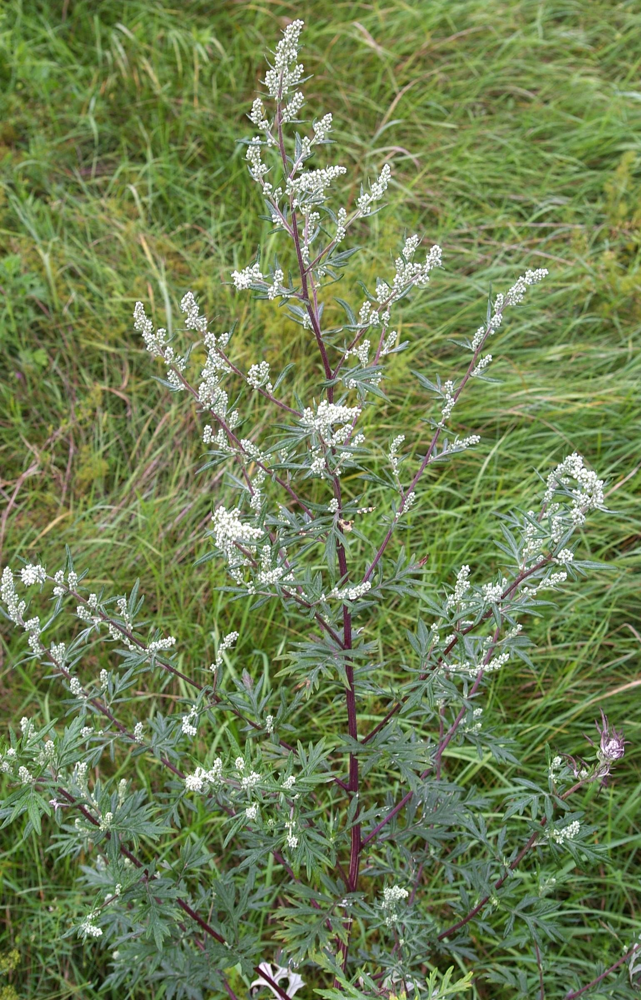

Artemisia vulgaris
common name: mugwort
en español: artemisa
name in Āyurveda: nāgadamanī (नागदमनी)
name in TCM: ài yè (艾叶)
plant family: Asteraceae (aster)
parts used: fresh and dried aerial parts  from Wikimedia Commons by Christian Fischer, CC BY-SA 3.0
observations/description
dried leaves
- vibrant light green, fluffy leaf material similar to artichoke leaf, some pieces of stem
- light earthy, nutty aroma
"Artemisia vulgaris", Wikipedia
- stems are purple-looking and angular
- opposite, pinnate, lobed leaves are smooth and of a dark green tint on the upper surface; they have dense, whitish tomentose hairs on the underside, are glabrous on the upperside
- flower heads are yellow to reddish-looking
distribution/conservation status
"Artemisia vulgaris", Wikipedia
- native to temperate Europe, Asia, North Africa, and Alaska
- naturalized in North America, where some consider it an invasive weed
- common plant growing in places containing low-nitrogen soils, such as waste places, roadsides and uncultivated areas
- readily becomes established in open, sandy ground
primary actions
The Yoga of Herbs, p. 130-1
- emmenagogue, antispasmodic, hemostatic, diaphoretic, antihelmintic, antiseptic, anti-inflammatory, nervine, bitter, aromatic
system affinities
digestive, reproductive, nervous, circulatory
primary uses
The Yoga of Herbs, p. 130-1
- warms the lower abdomen and fortifies the uterus
- regulates menstruation, relieves menstrual cramping and headaches, and strengthens the fetus
- opens and purifies the channels of the circulatory and nervous systems
- relieves pain
- with ginger and pennyroyal to promote menstruation blocked by nervous tension
- externally as a wash for fungal and other skin infections or as a douche for vaginal yeast infections
- uterine support: indicated for dysmenorrhea, menorrhagia, and infertility and is a preventative for miscarriage
- antispasmodic: indicated for convulsions and epilepsy
- nervine support: can help with hysteria, depression, mental exhaustion, insomnia
- anti-inflammatory: indicated for sciatica, gout, rheumatism
Spiritual Herbalism, p. 112
- facilitates lucid dreaming
- take at the end of the menstrual cycle to encourage an efficient and full flow, releasing all things stagnant
- as a vaginal steam to support healing fibroids and cysts and cervical issues
The New Age Herbalist, p. 44
- western herbalism holds that mugwort encourages absent or delayed periods; TCM/Āyurveda holds that it prevents miscarriage
- regulates periods and stops pain
- as a compress to speed up birth process and help expel afterbirth
- activates digestive process and stimulates the liver
- in TCM, burnt near the skin to alleviate rheumatic pain caused by cold and damp
- used externally to treat rheumatism and gout
energetics
The Yoga of Herbs, p. 130-1
- reduces vāta, kapha; increases pitta (in excess)
- bitter/pungent taste - pungent post-digestive effect
- heating
pharmacology
The New Age Herbalist, p. 44
- volatile oil, bitter principle (absinthin), flavonoids, tannin
contraindications/pharmaceutical interactions/warnings
The Yoga of Herbs, p. 130-1
- contraindicated for high pitta
- contraindicated for uterine infection or inflammation
Spiritual Herbalism, p. 112
- avoid during pregnancy and nursing
- avoid during extended periods or heavy bleeding
The New Age Herbalist, p. 44
- avoid during pregnancy except as prescribed by a qualified herbal practitioner
- avoid prolonged use and large doses
preparations
- tisane
- macerate
- tincture
- glycerite
dosage
myself (inferring from Leonurus cardiaca)
- infusion: 2-4 oz, 1-4/day
- tincture: 1-4 mL, 3/day
extra information
The Yoga of Herbs, p. 130-1
- various members of genus Artemisia are used medicinally around the world
- mugwort, wormwood, southernwood, sagebrush
- all are bitter aromatics
- mugwort is the better emmenagogue; wormwood the better antihelmintic and digestive tonic; sagebrush the better diaphoretic
- all are good for vāta conditions such as arthritis or nervous conditions associated with obstructed vāta
Spiritual Herbalism, p. 112
- name is from Artemis: goddess of the moon, the hunt, patron of women
personal experiences/simples
macerate (1 tbsp: 16 oz, 12 hours), dried leaf
- deep amber color, like dark honey
- very complex bitter flavor, lightly sweet and vegetal body
- dill? pine? carrot greens? (black/green/pink) pepper?
- sage
- tarragon! Artemisia dracunculus
- something very deepening/engrossing about the flavor/experience
- reminds me of the effect of rose: immediate transportation/transmutation
- i am intimidated? more accurately, i feel a deep need to respect/revere this plant; perhaps here also something to do with the childhood connection to tarragon
- i am experiencing a nervine effect, hard to identify clearly as either stimulating or sedative
- something a little ungrounded/not tethered to this realm
- leaning more towards stimulating -- not impeding relaxation, however
tisane (1.5 tsp: 12 oz, 10 minutes), dried leaf
- dark yellow color
- sweeter and less bitter than the macerate
- grounding in the palate, low notes of the aromatics are coming through as opposed to the higher notes of the macerate
- more carrot root than carrot green in the flavor
- nervine effect feels more grounding/sedative, energy is downward
witchcraft
Spiritual Herbalism, p. 112
- dream herb: mugwort's prolific growth tells us that we need visionary dreams to move us forward in our liberation
- guides us through release
- planetary influences: moon, water
recipes
sources
"Artemisia vulgaris" on Wikipedia. Retrieved 7 May 2025.
Frawley, David and Vasant Lad. The Yoga of Herbs: An Ayurvedic Guide to Herbal Medicine (1986)
Goldberg Blackthorn, Samantha. Ace of Cups Herbal Medicine and Botanical Magic Herbal School (2024)
Mabey, Richard et al. The New Age Herbalist (1988)
Rose, Karen M. The Art & Practice of Spiritual Herbalism (2022)